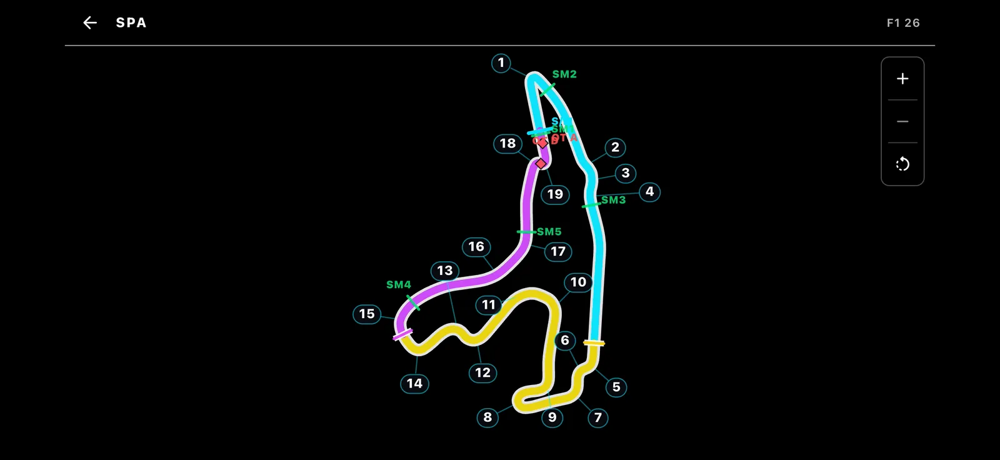

Consejos de carrera
Técnica de conducción, estrategia en pista y reglamento — lecturas breves y prácticas.
Compañero de sim racing para iPhone
Un compañero completo para pilotos de F1 virtual, organizado según lo que necesitas antes, durante y después de cada sesión. Todo lo que aparece en esta página está en la versión actual; el trabajo futuro se presenta aparte, al final.
Llega a cada sesión conociendo ya el circuito. Elige un circuito y un coche y planifica la próxima sesión con el conocimiento del circuito y tu propio historial, lado a lado.
La cobertura varía según el circuito y el coche; la información que falta se indica en lugar de suponerse.


Mantén la información crítica a la vista sin cambiar de cámara ni saturar el HUD del juego. Una pantalla de carrera en horizontal para tu iPhone, junto al volante.
Jax anuncia lo que cambió, cuando importa, para que mantengas la vista en la pista. Sus mensajes salen directamente de la telemetría — coherentes y predecibles, nunca improvisados.
Jax ofrece información y recordatorios. Las decisiones de conducción y de estrategia son tuyas.
Mira toda la carrera como desde el muro de boxes: la parrilla, el circuito y tu propio coche, en vivo. Ábrelo sobre el panel con un toque, o directamente desde Inicio.


Revive una carrera vuelta a vuelta. JMD reconstruye la carrera a partir de la telemetría que captó y reproduce cómo se movió la parrilla, dónde cambiaron las diferencias y qué pasó por el camino.
Disponible para carreras y sprints. La repetición usa solo los datos que recibió tu dispositivo — no puede reconstruir lo que el juego nunca envió.
Cada sesión completada se guarda en tu dispositivo. Cada análisis se adapta al tipo de sesión: libres, clasificación, contrarreloj y carreras muestran lo que importa en cada caso.
No todas las sesiones contienen todos los campos. JMD reconstruye lo que puede de forma fiable y muestra como faltantes los datos que faltan.


Mira cómo conduciste, no solo qué tan rápido. Las trazas se graban mientras conduces y se guardan con la sesión.
Recuerda qué usaste y qué funcionó. Los reglajes se captan en tus sesiones y se reúnen en una biblioteca que puedes filtrar por circuito.
Sin cuenta, sin registro. Tus datos viven en tu dispositivo, bajo tu control.
Disponible ahora
Técnica de conducción, estrategia en pista y reglamento — lecturas breves y prácticas.
Explora Jax Max Delta con demos integradas, sin necesidad de tener el juego en marcha.
km/h o mph, °C o °F.
Inglés, francés y español en toda la app.
Hoja de ruta
Direcciones, no promesas. Nada aquí tiene fecha, y un elemento pasa a la lista de arriba solo cuando se publica.
Libres, clasificación y carrera conectados en una sola historia.
Tendencias a lo largo de muchas sesiones: ritmo, consistencia, gestión de neumáticos.
Contexto de estrategia que tiene en cuenta el compuesto.
En estudio; no disponible por ahora.